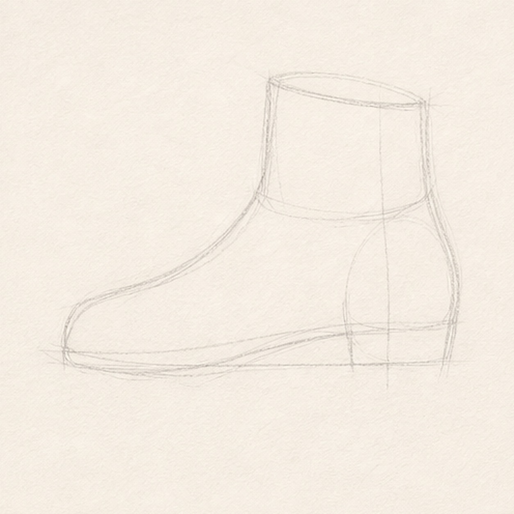
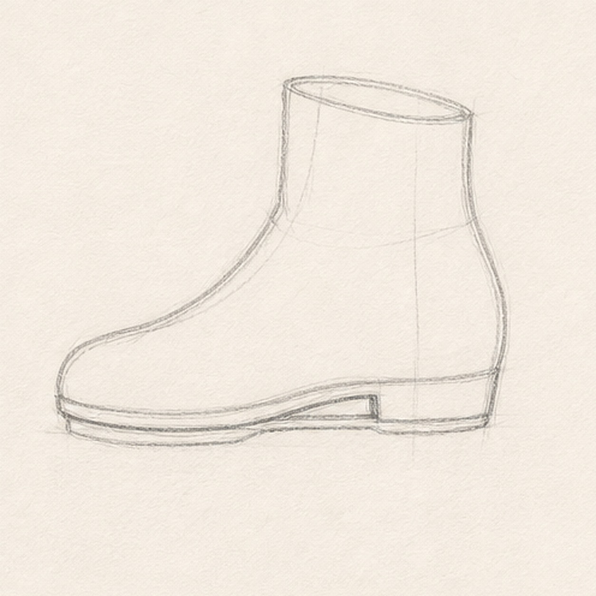
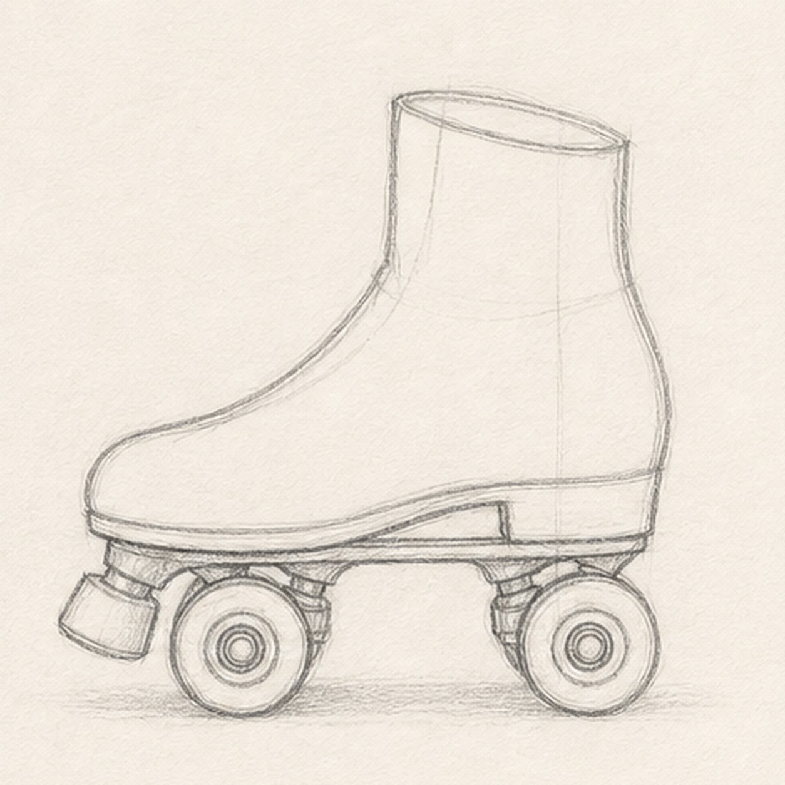
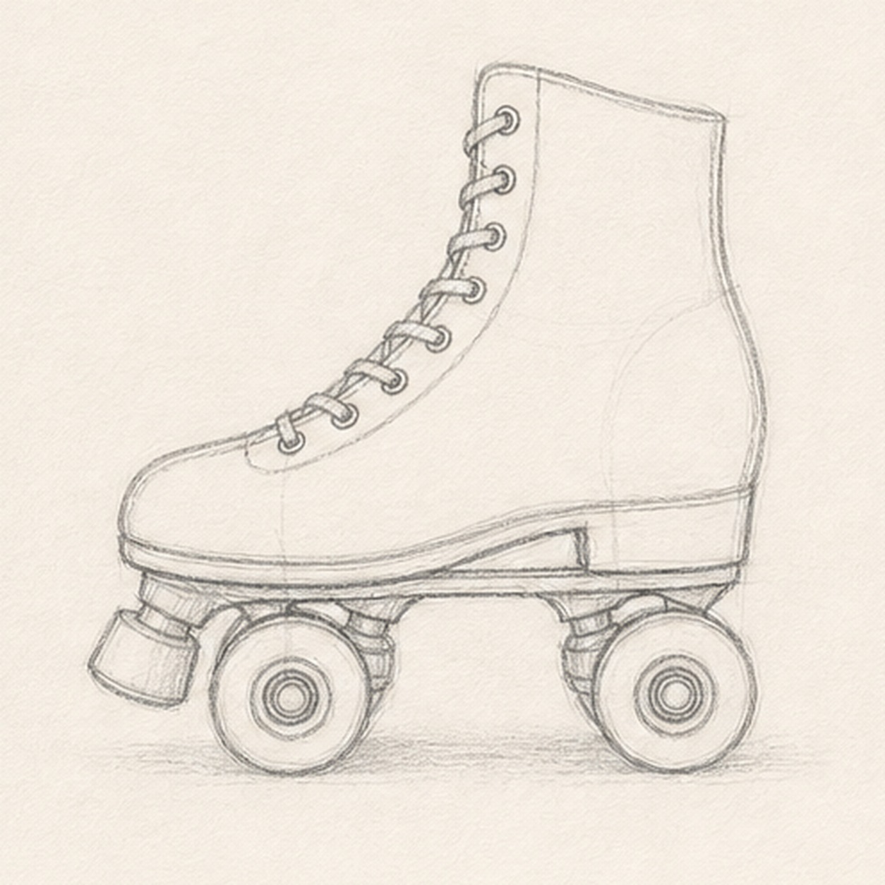
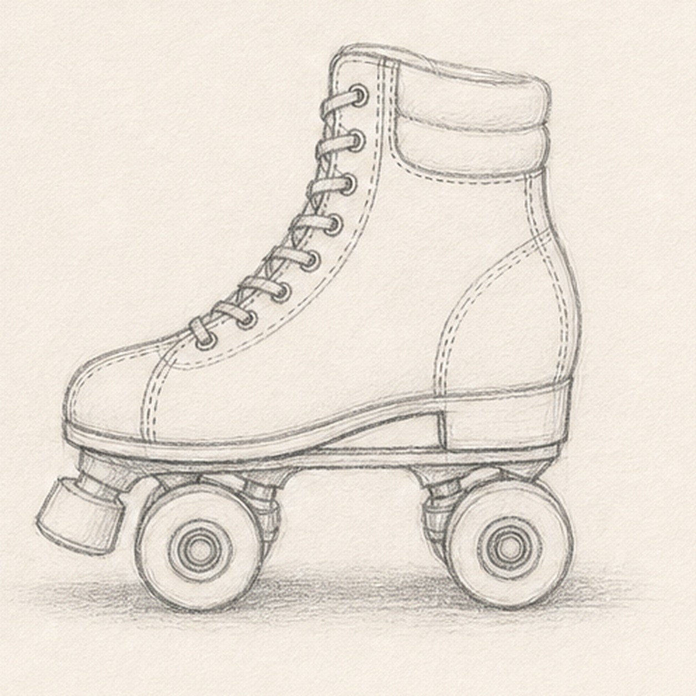

Pencil ready?
Let's draw a vintage roller skate
Work lightly through the construction, then darken only the lines that help the finished sketch.
-
01

Block in the boot
Sketch a long boot sole line, then raise a high ankle shape above it with a soft opening at the top.
Sketch tip: Keep the first boot light. The toe, heel, and ankle can wobble a little before you choose the final contour.
-
02

Add the sole plate
Draw a narrow plate under the boot and refine the top opening so the skate has a clear shoe shape.
Sketch tip: Let the plate follow the same curve as the boot sole. A parallel line keeps the hardware from looking crooked.
-
03

Place wheels and toe stop
Add two pairs of round wheels below the plate, then place the small toe stop under the front.
Sketch tip: Check the wheel baseline before darkening anything. All four wheels should feel like they touch the same floor.
-
04

Thread the laces
Mark small eyelets up the front of the boot and connect them with loose crossing lace lines.
Sketch tip: Draw the laces after the wheels so your hand does not crowd the small details too early.
-
05

Add cuff and seams
Add the padded ankle cuff, heel seam, stitch marks, and a pale shadow under the wheels.
Sketch tip: Use short broken strokes for the stitches. They should decorate the boot, not overpower the outline.
-
06

Polish the skate sketch
Darken the keeper contours, strengthen the laces and seams, and add restrained shading to the boot, wheels, toe stop, and shadow.
Sketch tip: Leave some construction texture showing. A roller skate feels more handmade when the graphite is not polished flat.